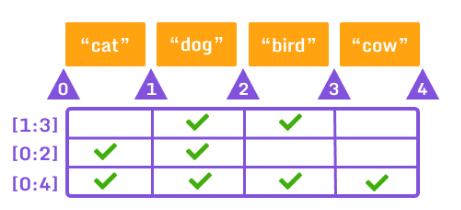

python
- var = entier,decimal,caractère (int,float,string)
- \n sauté une ligne dans string ou print
- liste = ['salut' , 'ça' , 'va']
- print(liste[0:3]) print(*liste)

| Opérateur |
Nom |
|
| + |
Addition |
|
| – |
Soustraction |
|
| * |
Multiplication |
|
| / |
Division |
|
| % |
Modulo |
|
| ** |
Puissance |
|
| // |
Division entière |
|
| x = 3 print:3 |
|
|
| -= |
x -=3 print:0 |
soustraction |
| /= |
x /=3 print:1 |
division |
| *= |
x *= 3 print:12 |
multiplication |
| += |
x += 3 print:6 |
addition |
| := |
|
|
| != |
true ou false |
non egal |
| == |
true ou false |
egal |
| <> |
true ou false |
plus grand ou plus petit |
| <= >= |
true false |
plus petit, grand et égal |
print(num:=int(input())) # creer une variable
raw_input('tapez ip: ') # valeur entré au clavier
input() # idem au dessus mais pour python3
int() deviens une valeur entier example int(raw_input('3'))
print("""texte
sur
plusieurs
lignes""")
>>> x = 3
>>> print "x vaut : " + str(x)
x vaut : 3
# x etant un entier il ne peu pas s'additionner a une chaine de caractère
>>> x = 3.125
>>> print "x vaut : " + str(float(x))
x vaut : 3.125
>>> print " x vaut : " + str(int(x))
x vaut : 3
fonction
input() # entrée au clavier
print() # afficher
int('') # nombre entier : 3
float('') # nombre decimal : 3.254
str('') # chaine de caractère
.upper() # majuscule x = text.upper()
.lower() # minuscule x = text.lower()
.capitalize() # majuscule première lettre
len() # compte len("salut") retourne 5
.pop() # supprime un élément de liste
liste.pop(1)
.append() # ajoute a la fin d'une liste
.insert(2,'') # ajoute a la place donné
def fonct(): # crée sa fonction
return
if
if 10 > 5: # attention aux deux points
print("10 greater than 5")
print("Program ended")
else
x = 4
if x == 5:
print("Yes")
else:
print("No")
elif
num = 3
if num == 1:
print("One")
elif num == 2:
print("Two")
elif num == 3:
print("Three")
else:
print("Something else")
and et or
temperature = 35
if temperature > 18 and temperature < 22: # temp supp a 18 et inf a 22
print('il fais bon')
if temperature > 18 or temperature == 22: # temp supp a 18 ou égal (bolléen)
print('test')
not
print(not 1 == 1)
false
print(not 1 > 7)
true
Boucle
for in
for _ in range(): # nombre ou variable
a = 1
b = 1
for loop in range(20):
for loop in range(20):
print(a * b, end=' ')
b = b + 1
a = a+ 1
b = 1
print()
while
a=1
while a < 10:
print(a)
a = a + 1